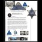

<!DOCTYPE html>
<html lang="en">
 <head>
<!-- Favicon -->
<link rel="shortcut icon" href="../../favicon.ico">
  <meta charset="utf-8"/>
  <title>
   LA County Police Deputy Badge Pizzagate Connection
  </title>
  <meta content="Post on /v/Pizzagate archived on 2017-03-06 by seesawseesaw." name="description"/>
  <meta content="LA County Police Deputy Badge Pizzagate Connection" property="og:title"/>
  <meta content="Post on /v/Pizzagate archived on 2017-03-06 by seesawseesaw." property="og:description"/>
  <link href="../../static/css/page.css" rel="stylesheet"/>
  <meta content="https://voat.pizzagate.hackliberty.org/thumbnails/ae/0d/ae0de55f-bf32-4912-b32b-ef0a3e885fe1.jpg" property="og:image"/>
  <meta content="https://voat.pizzagate.hackliberty.org/v/pizzagate/1699523.html" property="og:url"/>
  <meta content="width=device-width, initial-scale=1" name="viewport"/>
  <link href="https://voat.pizzagate.hackliberty.org/1699523.html" rel="canonical"/>
  <meta content="article" property="og:type"/>
  <meta content="Voat /v/Pizzagate Archive" property="og:site_name"/>
  <meta content="en_US" property="og:locale"/>
  <meta content="summary_large_image" name="twitter:card"/>
  <meta content="LA County Police Deputy Badge Pizzagate Connection" name="twitter:title"/>
  <meta content="Post on /v/Pizzagate archived on 2017-03-06 by seesawseesaw." name="twitter:description"/>
  <meta content="https://voat.pizzagate.hackliberty.org/thumbnails/ae/0d/ae0de55f-bf32-4912-b32b-ef0a3e885fe1.jpg" name="twitter:image"/>
 </head>
</html>
<body class="dark">
 <header>
  <nav class="navbar navbar-dark bg-primary">
    <a class="navbar-brand" href="../../index.html">/v/Pizzagate Archive</a>
    <div class="navbar-collapse">
      <ul class="navbar-nav">
        <li class="nav-item">
          <a class="nav-link" href="../../date/page-1.html">Date</a>
        </li>
        <li class="nav-item">
          <a class="nav-link" href="../../comments/page-1.html">Comments</a>
        </li>
        <li class="nav-item">
          <a class="nav-link" href="../../search.html">Search</a>
        </li>
        <li class="nav-item dropdown">
          <a class="nav-link dropdown-toggle" href="#" id="navbarDropdown" role="button" 
             data-toggle="dropdown" aria-haspopup="true" aria-expanded="false">
            subreddits
          </a>
          <div class="dropdown-menu" aria-labelledby="navbarDropdown">
            <a class="dropdown-item" href="https://reddit.conspiracy.hackliberty.org">r/conspiracy</a>
            <a class="dropdown-item" href="https://reddit.pizzagate.hackliberty.org">r/pizzagate</a>
            <a class="dropdown-item" href="https://voat.conspiracy.hackliberty.org">v/conspiracy</a>
            <a class="dropdown-item" href="https://voat.pizzagate.hackliberty.org">v/pizzagate</a>
          </div>
        </li>
      </ul>
    </div>
  </nav>
</header>

 <div id="container">
  <!-- array (
  'submissionid' => 1699523,
  'creationDate' => '2017-03-06 19:19:21',
  'domain' => 'imgs.fyi',
  'formattedContent' => NULL,
  'isAdult' => 0,
  'isAnonymized' => 0,
  'subverse' => 'pizzagate',
  'thumbnail' => 'ae0de55f-bf32-4912-b32b-ef0a3e885fe1.jpg',
  'title' => 'LA County Police Deputy Badge Pizzagate Connection',
  'url' => 'http://i.imgs.fyi/img/682.png',
  'userName' => 'seesawseesaw',
  'archivedLink' => NULL,
  'archivedDomain' => NULL,
  'isDeleted' => 0,
) --><div class="content" role="main">
   <div class="sitetable linklisting" id="siteTable">
    <div class="submission id-1699523 link type-text" id="submission-1699523">
     <a name="submissionTop">
     </a>
     <p class="parent">
     </p>
     <a class="thumbnail may-blank" href="http://i.imgs.fyi/img/682.png" target="_self">
      
     </a>
     <div class="entry unvoted">
      <p class="title">
       <a class="title may-blank" href="http://i.imgs.fyi/img/682.png" tabindex="1" target="_self" title="LA County Police Deputy Badge Pizzagate Connection">
        LA County Police Deputy Badge Pizzagate Connection
       </a>
       <span class="domain">
        (
        <a href="https://archive.searchvoat.co/search.php?d=imgs.fyi">
         imgs.fyi
        </a>
        )
       </span>
      </p>
      <p class="tagline">
       submitted
       <time datetime="2017-03-06T19:19:21+00:00" title="03/06/2017 7:19:21 PM">
        2017-03-06T19:19:21
       </time>
       by
       <span class="userattrs">
        <a class="author may-blank" href="https://archive.searchvoat.co/search.php?u=seesawseesaw">
         seesawseesaw
        </a>
       </span>
      </p>
      <ul class="flat-list buttons">
       <li class="first">
        <a class="comments may-blank" href="https://archive.searchvoat.co/v/pizzagate/1699523" rel="nofollow">
         3 comments
        </a>
       </li>
      </ul>
      <div class="expando link-expando" style="">
       
       <span class="tagline">
        PNG
        <a class="link-expando-direct" href="http://i.imgs.fyi/img/682.png" target="_blank">
         Open
        </a>
       </span>
      </div>
     </div>
     <div class="child">
     </div>
     <div class="clearleft">
     </div>
    </div>
    <div class="clearleft">
    </div>
   </div>
   <div class="horizontal-line">
   </div>
   <div class="commentarea">
    <div class="sitetable nestedlisting" id="siteTable">
     <div class="child id-8321506 comment even" style="">
      <div class="entry unvoted">
       <div class="noncollapsed" id="8321506" style=";">
        <p class="tagline">
         <a class="author may-blank" href="https://archive.searchvoat.co/search.php?u=Touchdown50">
          Touchdown50
         </a>
         <span class="userattrs">
         </span>
         <time datetime="2017-03-06T20:56:14+00:00" title="3/6/2017 8:56:14 PM">
          2017-03-06T20:56:14
         </time>
        </p>
        <div class="usertext-body may-blank-within" id="commentContent-8321506">
         <div class="md">
          <p>
           <p>
            I think a all mens secret society club is synonymous with pedophilia.  Catholic priest have their own bashes as well.
You can only guess what happens at those.  And you got your supply of young boys from the alter boys
           </p>
          </p>
         </div>
        </div>
        <ul class="flat-list buttons">
         <li class="first">
          <a class="bylink" href="https://archive.searchvoat.co/v/pizzagate/1699523/8321506" rel="nofollow">
           link
          </a>
         </li>
        </ul>
       </div>
      </div>
     </div>
     <div class="child id-8321321 comment even" style="">
      <div class="entry unvoted">
       <div class="noncollapsed" id="8321321" style=";">
        <p class="tagline">
         <a class="author may-blank" href="https://archive.searchvoat.co/search.php?u=VieBleu">
          VieBleu
         </a>
         <span class="userattrs">
         </span>
         <time datetime="2017-03-06T20:36:30+00:00" title="3/6/2017 8:36:30 PM">
          2017-03-06T20:36:30
         </time>
        </p>
        <div class="usertext-body may-blank-within" id="commentContent-8321321">
         <div class="md">
          <p>
           <p>
            It is so ridiculous, it is like the pedo symbol on the badge is literally formed by the same machinery - an exactly machined duplicate of the FBI examples of confiscated jewelry and etc.  A variety of badges with the pedo display
            <a href="https://i.redd.it/u8iqwzxo60ey.png">
             https://i.redd.it/u8iqwzxo60ey.png
            </a>
            No wonder "bear" became common gay slang.
           </p>
           <p>
            The history of just who designed that badge is fascinating, and yep, ends up at a private men's club, Luciferian theatricals, the whole deal...    I am going to past it here, but the original work was done by
            <a href="https://archive.searchvoat.co/user/Alpo">
             @Alpo
            </a>
           </p>
           <p>
            <strong>
             The badge with the Boy Lover symbol originated with Sheriff E. W. Biscailuz, who had a badge custom made for him with this symbol.
            </strong>
           </p>
           <p>
            "Around 1939, Sheriff Biscailuz developed the Sheriff's Boys Band. This group of juvenile musicians was organized and trained by Colonel Vesey Walker, an experienced and veteran conductor. Under the sponsorship of the Sheriff's Department they appeared in various cities, proudly representing the finest Sheriff's Deptpartment in the entire country."
           </p>
           <p>
            "Another innovative first by Sheriff Biscailuz was the creation of the “Junior Deputy” program in the 30’s. The program has since morphed into today’s Law Enforcement Explorer program."
           </p>
           <p>
            Could this be just another coincidence?  Additional information:
           </p>
           <p>
            <a href="http://archive.is/vIFRd">
             http://archive.is/vIFRd
            </a>
            "During Prohibition, Biscailuz was one of an influential band of revelers who called themselves the Uplifters Club and built their own Rustic Canyon hangout. The exclusive men's group, drawn from the rich, powerful and famous, included newspaper and bank executives, and Hollywood celebrities Will Rogers, Walt Disney, Spencer Tracy, Clark Gable, Harold Lloyd and Daryl F. Zanuck."
           </p>
           <p>
            More about the Uplifters:
            <a href="http://archive.is/XrgdS">
             http://archive.is/XrgdS
            </a>
           </p>
           <p>
            Yet more:
            <a href="https://en.wikipedia.org/wiki/The_Uplifters">
             https://en.wikipedia.org/wiki/The_Uplifters
            </a>
            The Uplifters produced a play titled "The Uplift of Lucifer"
           </p>
           <p>
            and from
            <a href="https://archive.searchvoat.co/user/redditsuckz">
             @redditsuckz
            </a>
            , my erstwhile frenemy -
           </p>
           <p>
            Kids N Kops program;
           </p>
           <p>
            The Kids 'N' Kops program is designed for children ages 9-12 who are on the waiting list for a Big Brother or Big Sister. Kids 'N' Kops is based on a partnership between the Bridgewater Police Service, Lunenburg and Queens County RCMP, and South Shore Big Brothers Big Sisters, and is funded by United Way of Lunenburg County. The week is comprised of a mini police academy with a recreational component. The morning includes activities with police officers and police partners such as crime scene investigations, K-9 scenarios, fire safety demonstrations and fingerprinting. The afternoon includes physical activities such as swimming, sports and beach fun. The Kids 'N' Kops program is supervised by volunteers and staff of the Bridgewater Police Service, Lunenburg and Queens County RCMP and South Shore Big Brothers/Big Sisters.
           </p>
           <p>
            <a href="http://archive.is/eso0v">
             http://archive.is/eso0v
            </a>
           </p>
           <p>
            Double Heart Logo for Big Brothers Big Sisters;
           </p>
           <p>
            <a href="http://i.imgur.com/IL5CzzH.pngPNG">
             http://i.imgur.com/IL5CzzH.pngPNG
            </a>
           </p>
          </p>
         </div>
        </div>
        <ul class="flat-list buttons">
         <li class="first">
          <a class="bylink" href="https://archive.searchvoat.co/v/pizzagate/1699523/8321321" rel="nofollow">
           link
          </a>
         </li>
        </ul>
       </div>
      </div>
     </div>
     <div class="child id-8320584 comment even" style="">
      <div class="entry unvoted">
       <div class="noncollapsed" id="8320584" style=";">
        <p class="tagline">
         <a class="author may-blank" href="https://archive.searchvoat.co/search.php?u=seesawseesaw">
          seesawseesaw
         </a>
         <span class="userattrs">
         </span>
         <time datetime="2017-03-06T19:19:50+00:00" title="3/6/2017 7:19:50 PM">
          2017-03-06T19:19:50
         </time>
        </p>
        <div class="usertext-body may-blank-within" id="commentContent-8320584">
         <div class="md">
          <p>
           <p>
            as seen on an unrelated thread on reddit
           </p>
          </p>
         </div>
        </div>
        <ul class="flat-list buttons">
         <li class="first">
          <a class="bylink" href="https://archive.searchvoat.co/v/pizzagate/1699523/8320584" rel="nofollow">
           link
          </a>
         </li>
        </ul>
       </div>
      </div>
     </div>
    </div>
   </div>
  </div>
 </div>
<!-- Footer Section -->
<footer class="container-fluid mt-3">
  <p class="small mb-0">
    /v/pizzagate archive has 40446 posts and 683312 total comments.
    <a href="https://git.hackliberty.org/c0mmando/voat-pizzagate-archive/">source code</a>.
  </p>
</footer>

<script src="../../static/js/jquery-3.7.1.slim.min.js"></script>
<script src="../../static/js/comments-toggle.js"></script>

</body>
